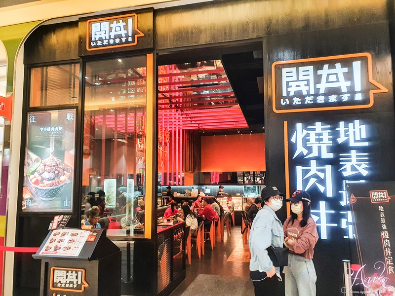
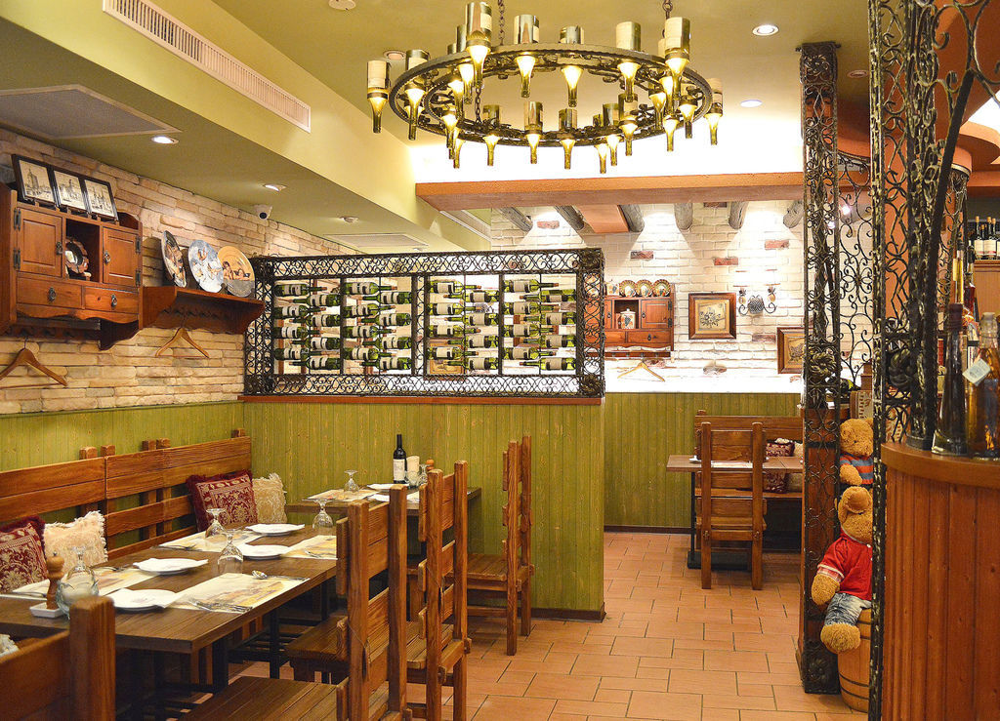
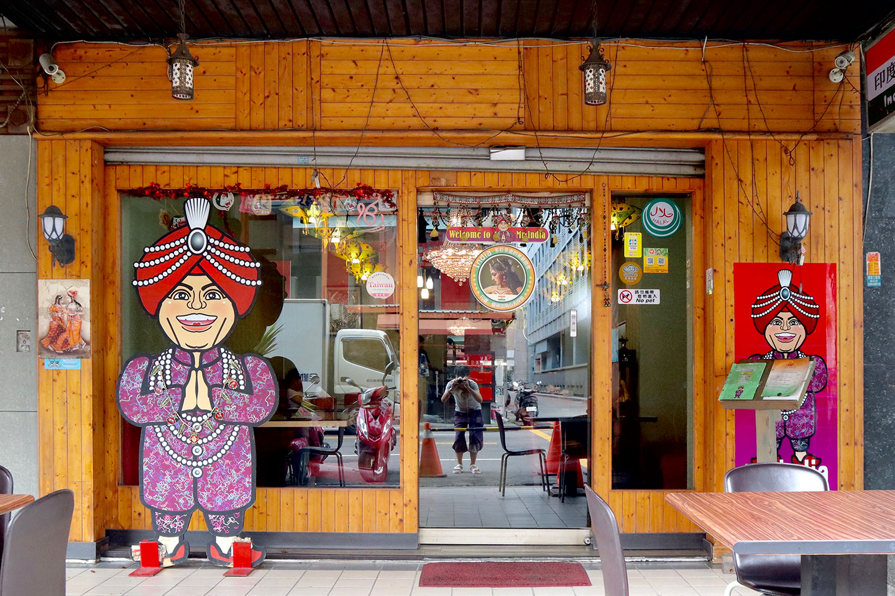
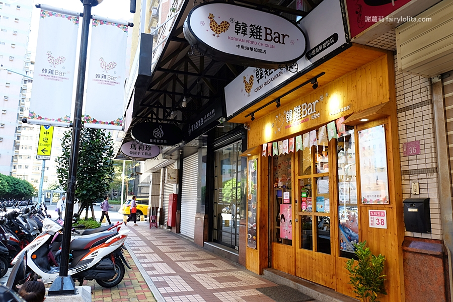
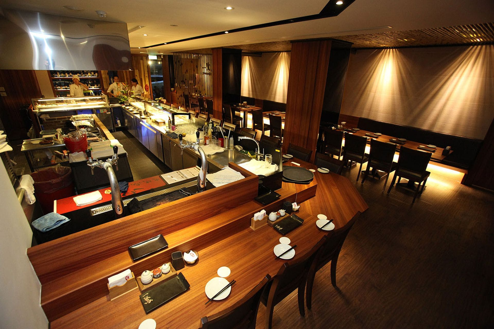
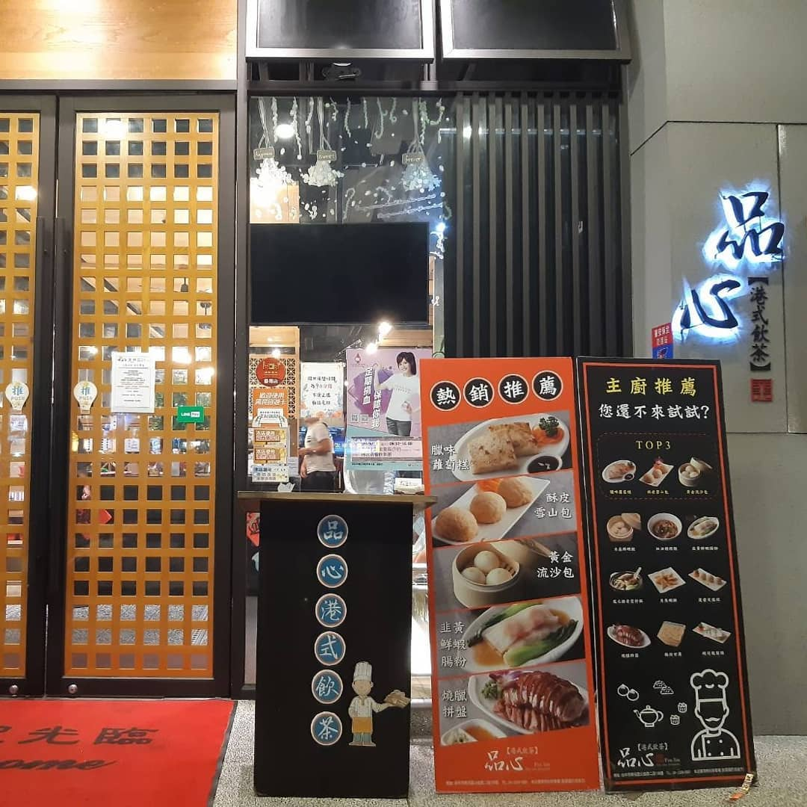
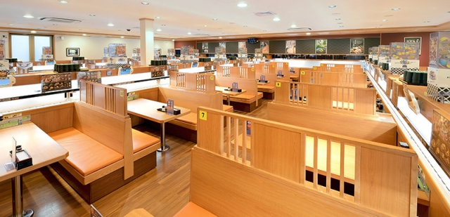
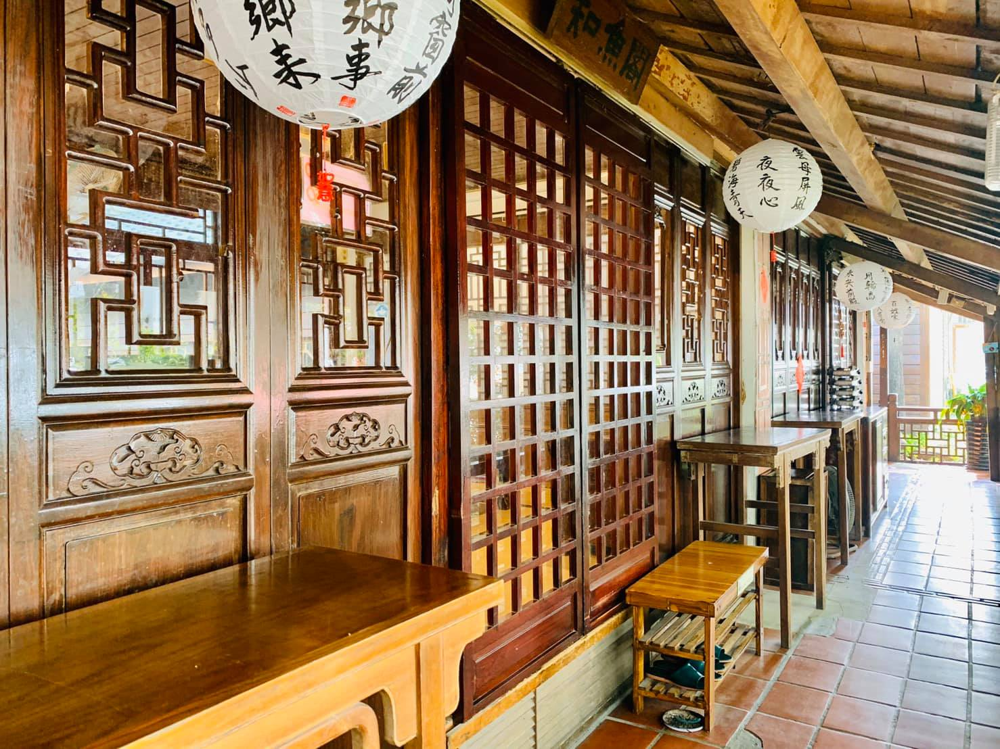
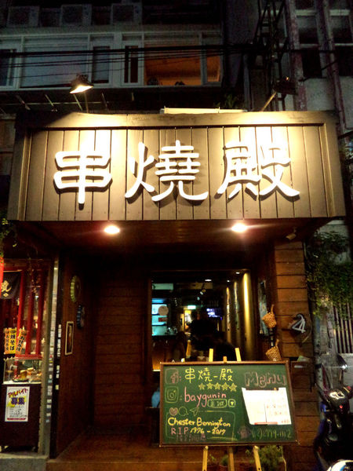

美式料理
7分so
台中市崇德路一段518號
4.9

日式料理
開丼
台中市西屯區台灣大道三段301號12F
5.0
義式料理
aqua水相餐廳
台中市北屯區經貿三路二段100號
4.3

法式料理
布列塔尼歐法鄉村雅廚
台中市西區中興街225號
5.0

中東料理
印度先生
台中市西屯區精誠路6號
4.6
日式料理
森森燒肉
台中市南屯區公益路二段211號
4.5

韓式料理
韓雞bar
台中市南區國光路216-12號
4.8

日式料理
一鷺串燒居酒屋
台中市西區中興街120號
4.9

港式料理
品心港式飲茶
台中市南屯區公益路二段138號
4.3

日式料理
藏壽司
台中市北屯區中清路二段777號
4.2

中式料理
耕讀園
台中市西屯區市政路109號
4.1

日式料理
串燒殿
台北市萬華區武昌街二段10號2樓
3.8
義式料理